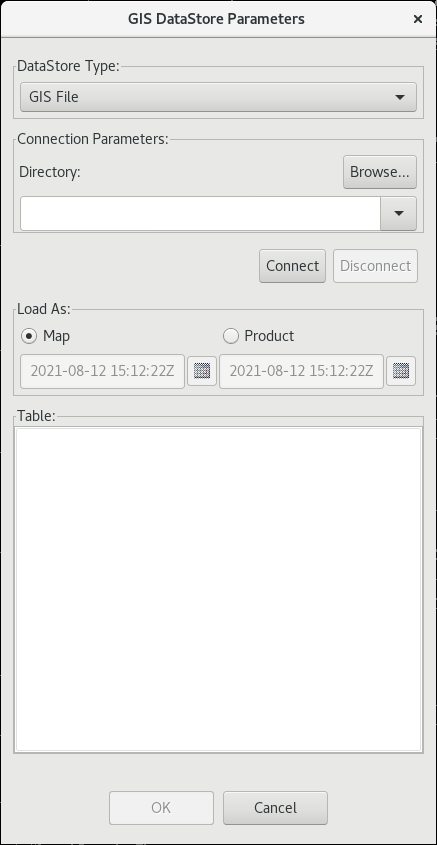
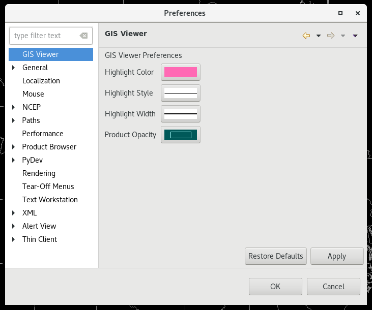
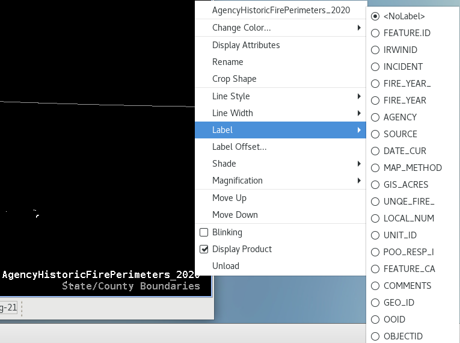

GIS Import
The Geographic Information System (GIS) Import menu entry enables users to import geospatial data from varying GIS data sources for display in CAVE. CAVE currently only supports shape data in WGS84 unprojected latitude/longitude. This section describes how to:
Display GIS Data
Importing a GIS shapefile is accessed through File > Import > GIS Data. The GIS DataStore Parameters dialog is comprised of four sections:
- DataStore Type: You can select a file type from the dropdown list. The only option is GIS File.
- Connection Parameters: Click the Browse button and navigate to the directory where your shapefiles are. Pressing Connect will populate the available shapefiles.
- Load As: Shapefiles can be loaded as a Map or as a Product.
- Map: The selected shapefile displays as a map, similar to if you load a map from the Maps menu.
- Product: When this radio button is selected, you will also need to select the start and end date/time the data is valid for. The selected shapefile displays as a product with a shaded (color-filled) image. When plotting with additional products, if the display time falls within the start/end time range selected, the shapefile will display. When the valid time falls outside the start/end time, the map product image does not display.
- Table: This section lists all of the available shapefiles that are available for display.

GIS Data Preferences
Updating GIS display preferences is accessed through CAVE > Preferences > GIS Viewer. You are able to alter the highlight color, style, width, and opacity of the product in the Main Display here.

Customizing the GIS Attribute Dialog
You have the ability to highlight or hide specific areas of the displayed map. These functionalities are available by right click and holding on the Map Product ID in the Legend area and selecting Display Attributes. The pop-up window is commonly referred to as the "Attributes Table". For each row of information there is an associated map/map product image displayed on the Main Display Pane.

Highlighting
Highlighting Selected Areas
To highlight a selected area(s) of the GIS image, highlight the corresponding row(s) in the Attributes Table, right click and hold on one of the selected rows, and check the Highlighted checkbox. Active highlighted rows will be yellow in the table and the corresponding area in the map display will be pink.
Unhighlighting Selected Areas
You can unhighlight by selecting the row, right mouse hold and uncheck the Highlighted checkbox.
Unhighlighting All Areas
To remove all highlighted, select Annotation > Clear Highlights.
If you are interested in a particular area in the Main Display Pane, but don't know the where in the Attributes Table it is, left double-click on the area of interest and the corresponding row will be highlighted.
Controlling Visibility of Image Areas
Hiding Selected Areas
To hide a selected area(s) of the GIS image, highlight the corresponding row(s) in the Attributes Table, right click and hold on one of the selected rows, and check the Visible checkbox. Hidden rows will be gray in the table and the corresponding area in the map display will disappear.
Unhiding Selected Areas
You can make these images visible by selecting the row, right mouse hold and check the Visible checkbox.
Unhiding All Areas
To make all images visible, select Annotation > Make All Visible.
Configuring Attributes Table
In the Attributes Table, you have the option to sort by columns and select which columns are displayed.
Selecting Columns to Display
By default, all available columns are displayed. The Select Columns dialog will pop-up if you select Data > Select Columns.... You can highlight the columns use the arrows to move them into the Available or Displayed columns. Clicking OK will update your table.
Sorting Column Information
The Sort Order dialog will pop-up if you select Data > Sort.... You can use the drop down menu to choose the column to sort by and then sort by Ascending or Descending. You can sort by additional columns. Clicking OK will update your table.
Labeling GIS Data
You can select which attribute you want to use to label the objects on the Main Display.
To open the Label submenu, right click and hold on the Map Product ID in the Legend area to open a pop-up menu and select Label and choose which attribute you want as the label.
